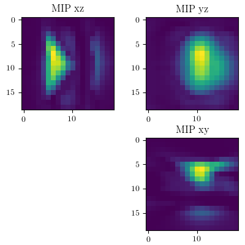
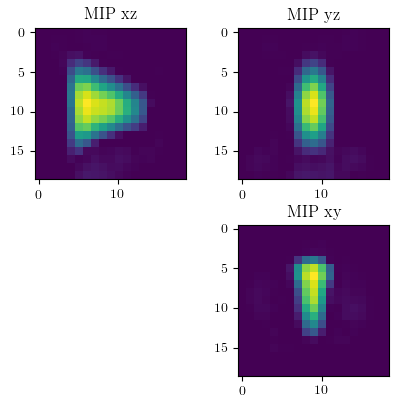
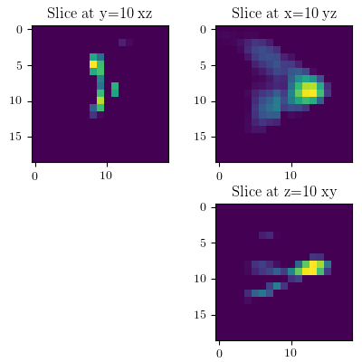
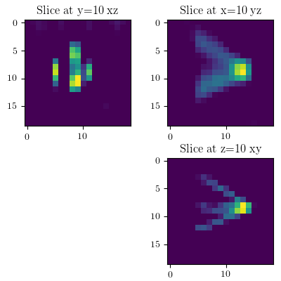
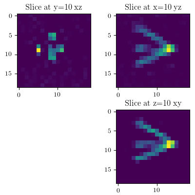
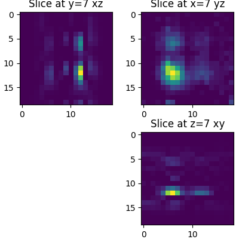
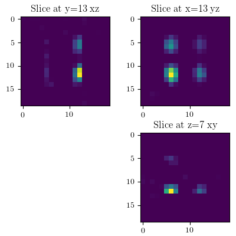
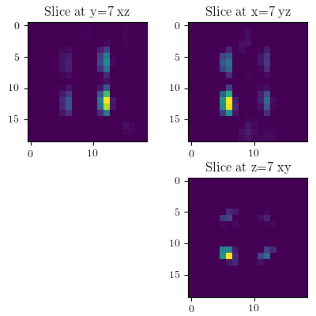
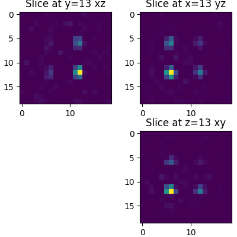

Reconstructions
Reconstruction results for the different phantoms and measurements sequences are shown below.
Shape Phantom Reconstructions
1D Reconstruction

2D Reconstruction

3D Reconstruction

Reolution Phantom Reconstruction
1D Reconstruction

2D Reconstruction

3D Reconstruction

Concentration Phantom Reconstruction
1D Reconstruction Slice 7,7,7

1D Reconstruction Slice 13,13,13

2D Reconstruction Slice 7,7,7

2D Reconstruction Slice 13,13,13

3D Reconstruction Slice 7,7,7

3D Reconstruction Slice 13,13,13
